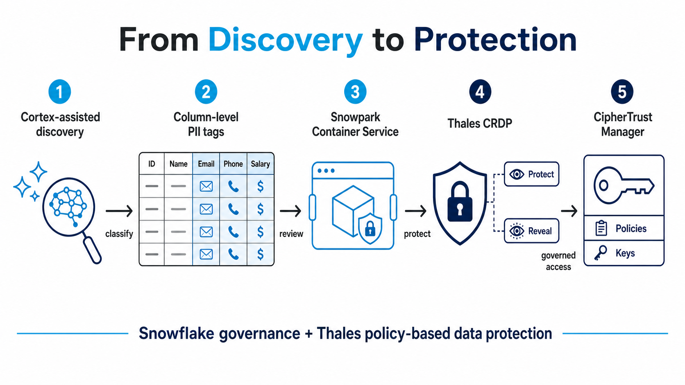
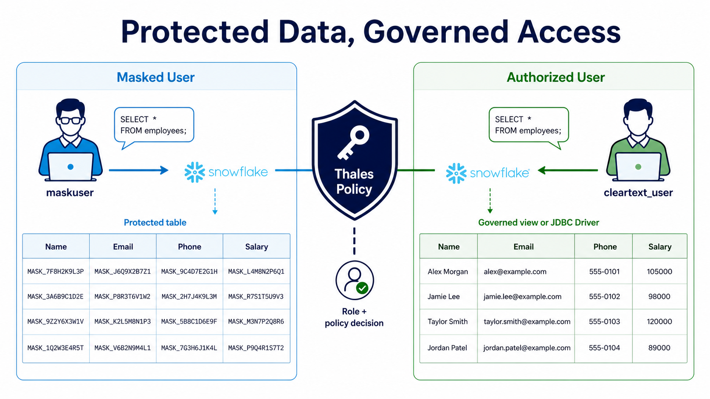

Data Protection in Snowflake with Cortex AI and Thales
Reduce Risk and Accelerate Value
Snowflake Cortex AI as a sensitive-data security enabler, with Thales protection, policy, and key control.
Data is now a core business asset, but sensitive data brings a difficult responsibility. Organizations must make data useful to analysts, developers, and AI initiatives while reducing exposure, demonstrating compliance, and retaining control over the encryption keys that protect their most valuable information.
The Thales and Snowflake partnership helps address this challenge without turning every data project into a security engineering project. Snowflake brings data discovery, classification, governance, and the scale of the AI Data Cloud. Thales brings policy-based data protection, centralized key management, and customer choice across deployment models. Together, they help organizations create a practical, defense-in-depth strategy for sensitive data.
You cannot have a good analytics strategy without a good data strategy, and you cannot have a good data strategy without a good security strategy. The Thales and Snowflake partnership helps bring those strategies together, so organizations can use data with greater confidence instead of treating security as an afterthought.

Reduce risk without slowing down the business
Organizations increasingly need to use sensitive data in analytics, reporting, and AI workloads. The risk is not limited to storing the data: exposure can also occur when data is copied, shared, queried, or made available to the wrong user. Protection needs to follow the data and be enforced consistently.
Thales CipherTrust REST Data Protection (CRDP) provides policy-based options such as encryption, tokenization, masking, and controlled reveal. Teams call a central service while security administrators manage the policies, keys, and authorized access rules. This separation of duties can reduce the chance that controls drift as data products evolve.
For Snowflake customers, the result is a stronger defense-in-depth posture. Snowflake platform controls protect the environment, while Thales adds data-centric protection and independent policy control around sensitive fields. Protected values can limit the exposure of usable cleartext when data is accessed outside its intended context.
Improve compliance with a visible, repeatable control model
Compliance is difficult when organizations cannot show where sensitive data is located, how it was protected, and who can access it. Snowflake’s built-in sensitive-data classification can identify sensitive data at column level and apply semantic and privacy tags. That creates a governance signal that can drive consistent action rather than relying on manually maintained lists of tables and fields.
With Cortex-assisted workflows, security teams can describe a goal in plain language, such as identifying PII in a database and applying a protection tag. The workflow can still include human review and dry-run approval before data is changed. Once a column is tagged, the tag can trigger a consistent Thales protection workflow.

Support data sovereignty and customer key control
For many organizations, data sovereignty is not simply about the region where data resides. It is also about who controls the keys and policies that govern access to sensitive information. Thales enables customers to retain control of encryption keys and data-protection policies, helping them meet internal requirements and demonstrate appropriate controls to auditors and regulators.
Customer choice matters because regulatory, operational, and risk requirements differ. Thales supports physical, virtual, cloud, hybrid-cloud, and multi-cloud deployment options. Where required, organizations can use FIPS-certified Thales hardware security modules and related key-management infrastructure as part of their broader cryptographic control strategy.
Shorten the path from discovery to protection
Separate tools for discovery, classification, ticketing, integration, and policy enforcement can increase operational complexity and slow down delivery. Snowflake reduces that complexity by bringing classification and governance close to the data. Cortex can make the operating experience more approachable by helping turn natural-language objectives into reviewable Snowflake work. Thales provides the protection engine and centralized policy layer.
Snowpark Container Services gives organizations a deployment model that can run the integration alongside Snowflake workloads. This can simplify deployment and lifecycle management and reduce unnecessary network hops compared with designs that route protection requests through an external integration point. Actual performance depends on workload shape, regional placement, policy, and service sizing, but bulk REST protection and local service-to-service communication create a strong foundation for efficient operation.
A practical choice for modern data programs
The Thales and Snowflake combination is about more than encryption. It gives organizations a way to discover sensitive data, apply the right protections, govern cleartext access, and retain control over keys and policy as their data estate grows. That translates into business value: lower exposure risk, clearer evidence for compliance, stronger sovereignty controls, and a faster route from data discovery to protection. In that sense, Cortex AI is not only a productivity tool: paired with Thales, it can be a practical sensitive-data security enabler for a modern data strategy.